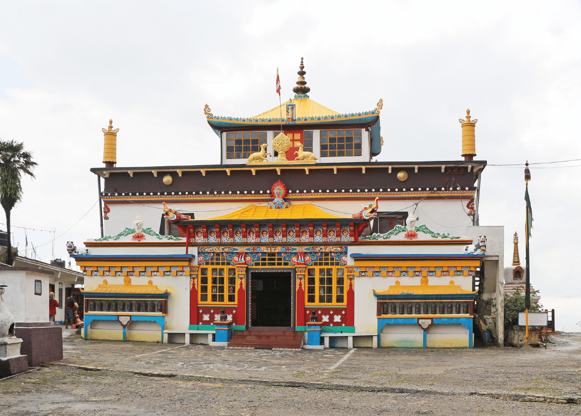
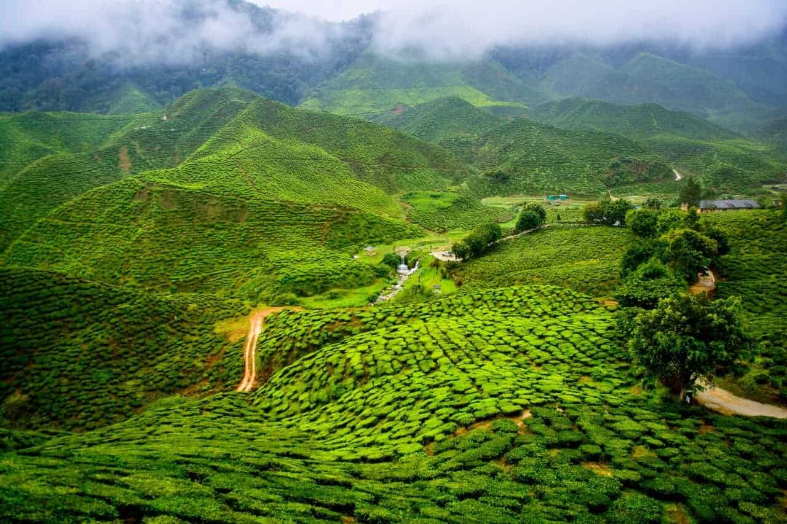
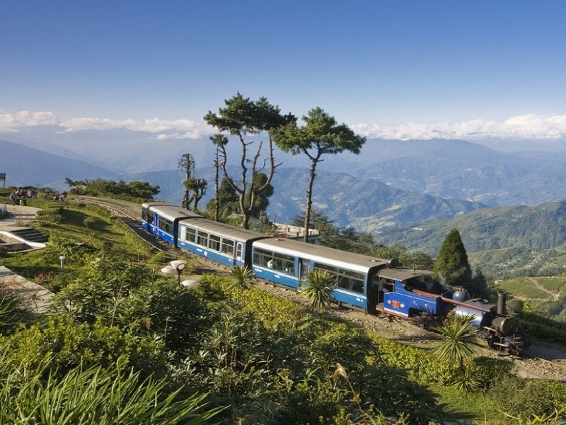
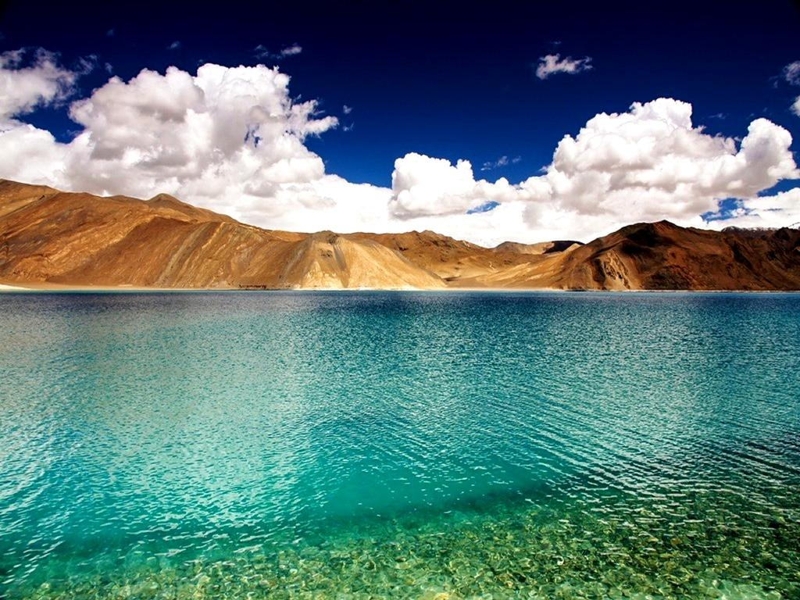
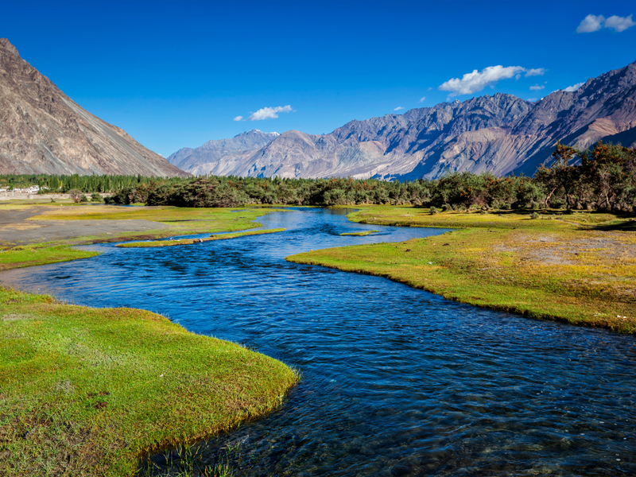
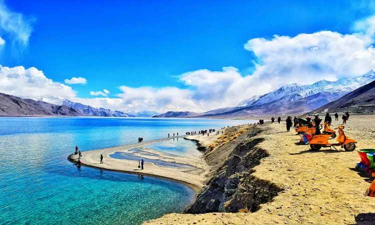
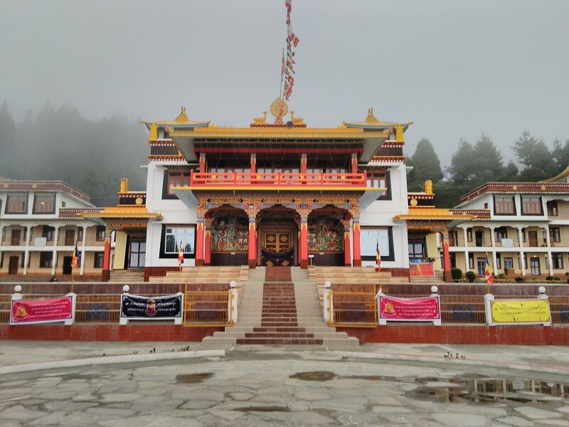
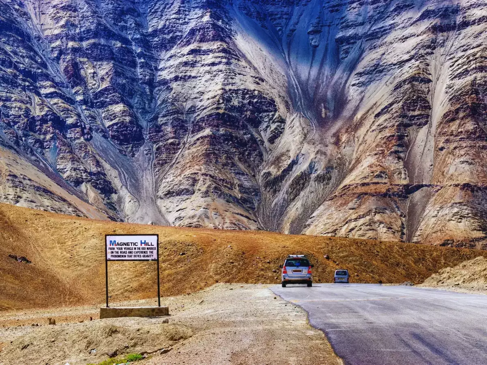
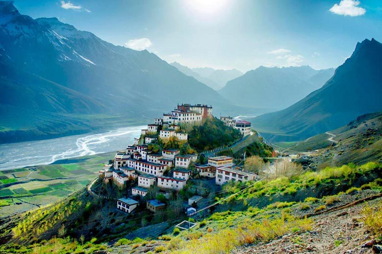
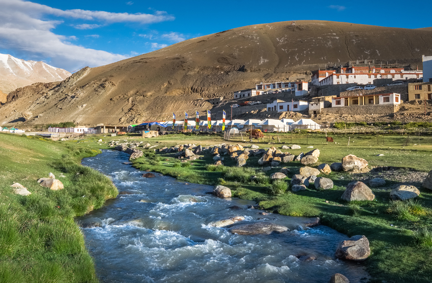

Ghoom Monastery, also known as Yiga Choeling Monastery, is a significant Buddhist monastery in
Darjeeling, West Bengal.
It's known for its 15-foot-high statue of the Maitreya Buddha,
Tibetan-style wall murals, and serene
ambiance.
1. Maitreya Buddha Statue:
The monastery's main attraction is a 4.57-meter (approximately 15 feet) high statue of
Maitreya
Buddha, the future
Buddha.
2. Historical Significance:
Built in 1850 by Mongolian astrologer and monk Sokpo Sherab Gyatso, it's one of the oldest
monasteries in the Darjeeling
region and belongs to the Gelukpa (Yellow Hat) sect.
3. Tibetan Buddhist Architecture:
The monastery showcases traditional Tibetan-style architecture, including intricate wall murals
and
a serene environment
conducive to meditation and reflection.
4. Spiritual Center:
Ghoom Monastery serves as a vital center for Buddhist education and propagating
Buddhist
teachings.
5. Tourist Attraction:
It's a popular tourist destination, offering a glimpse into Buddhist monastic life,
stunning views
of the surrounding
hills, and opportunities to admire Tibetan art and artifacts.

Happy Valley Tea Estate, located in Darjeeling, West Bengal, is the second oldest tea estate in the
region, established
in 1854. It's known for its organic and bio-dynamic farming methods and offers guided tours where
visitors can learn
about the tea-making process and
1. Historical Significance:
Happy Valley is one of the oldest tea estates in Darjeeling, with a history intertwined with the
cultivation of
Darjeeling tea.
2. Organic and Bio-dynamic Farming:
The estate emphasizes environmentally friendly practices, using organic and bio-dynamic methods to
cultivate tea.
3. Tea Production:
Happy Valley produces a variety of teas, including traditional black tea, green tea, and specialty
teas.
4. Tourist Attraction:
The estate is a popular tourist destination, offering guided tours that showcase the tea-making process
and provide a
tea-tasting experience.
5. Scenic Location:
Situated amidst the misty hills of Darjeeling, the estate offers stunning views of the Himalayan
foothills.

The Darjeeling Himalayan Railway (DHR), also known as the "Toy Train," is a 2 ft (610 mm)
narrow-gauge railway that
connects New Jalpaiguri and Darjeeling in West Bengal, India.
It's a UNESCO World Heritage Site
known for its unique
engineering and scenic route
through the Himalayan foothills.
1. UNESCO World Heritage Site:
The DHR was declared a UNESCO World Heritage Site in 1999, recognizing its outstanding
universal
value and unique
engineering achievements in building a railway in a challenging
mountainous terrain.
2. Innovative Engineering:
The railway is a remarkable example of bold and imaginative engineering, featuring six zigzag
reverses and three loops
to navigate the steep gradients of the Darjeeling hills.
3. Scenic Route:
The DHR offers breathtaking views of the Himalayan mountains, including Kanchenjunga, as
it winds
its way through lush
tea gardens and picturesque landscapes.
4. Historical Significance:
Built between 1879 and 1881, the DHR played a vital role in connecting the hill station of
Darjeeling with the plains,
facilitating trade and transportation.
5. Tourism Attraction:
The "Toy Train" is a major tourist attraction, drawing visitors from around the world who come
to
experience the charm
of a steam locomotive journey through the mountains.

Pangong Tso, a high-altitude lake in Ladakh, is significant for its stunning beauty, unique geographical
features, and
strategic location. It's a popular tourist destination known for its ever-changing colors and is also a
site of ongoing
border tensions between India and China.
1. Stunning Scenery and Changing Colors:
Pangong Tso is renowned for its breathtaking beauty, with its ever-changing colors shifting between
shades of blue,
green, and even purple throughout the day. The lake is surrounded by dramatic mountains and is a popular
spot for
photography and scenic views.
2. High Altitude and Brackish Water:
Situated at an altitude of 14,270 feet (4,350 meters), it's one of the highest saltwater lakes in the
world. Despite
being a salt lake, it freezes completely during winter, making it a unique environment.
3. Strategic Location and Border Disputes:
Pangong Tso lies on the India-China border, with the Line of Actual Control (LAC) passing through it.
The lake is a
point of contention, with both countries having differing perceptions of the border.
4. Tourist Attraction and Border Tourism:
The lake is a popular tourist destination, attracting visitors to witness its beauty and experience the
unique
high-altitude environment. It's also part of the Bharat Ranbhoomi Darshan initiative, which aims to
promote border
tourism.
5. Unique Geographical Features:
Pangong Tso is an endorheic lake, meaning it has no outlet, and the water only flows in, making it a
landlocked basin.
This unique feature contributes to its brackish water and the way it freezes in winter.

Nubra Valley is a high-altitude cold desert in Ladakh, India, known for its scenic beauty,including
sand dunes,
monasteries, and rivers. Key attractions include Diskit Monastery with its giant
Buddha statue, the
Hunder sand dunes
with Bactrian camels, and the Samstanling Monastery.
1. Location and Geography:
Nubra Valley is situated in the northern part of Ladakh, between the Karakoram and Ladakh
ranges of
the Himalayas.
2. Monasteries:
Diskit Monastery, the largest and oldest monastery in Nubra, is a major attraction, famous for
its
giant Maitreya Buddha
statue. Samstanling Monastery, near Sumur village, is another significant
Buddhist center.
3. Sand Dunes and Bactrian Camels:
The Hunder sand dunes are a unique feature, offering a cold desert experience and the chance to
ride
Bactrian camels
(double-humped camels).
4. Rivers and Water Sources:
The confluence of these rivers adds to
the valley's scenic beauty. Panamik village is known for
its hot water springs, a popular spot for
visitors.
5. Unique Culture and Accessibility:
Nubra Valley was once a major stopover on the ancient Silk Route, and its culture reflects this
history. It's accessible
via Khardung La pass or Wari-la pass, and the Shyok road connects it to
Pangong Lake. Visitors need
an inner line permit
to enter Nubra.

Leh-Ladakh is a region renowned for its stunning landscapes, ancient monasteries, and thrilling
adventure opportunities.
Some of the key highlights include the mesmerizing Pangong Tso lake, the challenging Khardung La pass,
the serene Tso
Moriri lake, the historic Leh Palace, the ancient monasteries like Thiksey and Hemis, and the unique
experience of Nubra
Valley with its sand dunes and double-humped camels.
1. Stunning Lakes:
Pangong Tso and Tso Moriri are high-altitude lakes with breathtaking views and vibrant colors, offering
unique photo
opportunities and a serene atmosphere.
2. Majestic Mountains and Passes:
Leh-Ladakh is nestled amidst the Himalayas, with iconic mountain passes like Khardung La and Chang La,
offering
thrilling rides and panoramic vistas.
3. Ancient Monasteries:
The region is dotted with numerous monasteries, including Thiksey, Hemis, and Diskit, showcasing Tibetan
Buddhist
culture, art, and architecture.
4. Unique Landscapes:
Nubra Valley, with its sand dunes and Bactrian camels, offers a stark contrast to the typical
mountainous terrain,
making it a must-visit destination.
5. Adventure Activities:
Leh-Ladakh is a haven for adventure enthusiasts, with opportunities for trekking, mountain biking, white
water rafting,
and even ice hockey on frozen lakes during winter.

Monasteries are important for several reasons, including being centers of learning, preserving
religious texts and
culture, providing social services, and offering spiritual guidance. They also act
as places of
prayer and reflection,
fostering a sense of community and connection with the divine.
1. Centers of Learning and Literacy:
Monasteries were often the only places where people could receive an education in the Middle
Ages.
Monks and nuns copied
and preserved ancient texts, including religious scriptures and
classical literature, ensuring
knowledge was passed down
through generations.
2. Preservation of Culture and Art:
Monasteries played a vital role in preserving cultural heritage. Monks and nuns were often skilled
artists, scribes, and
musicians, contributing to the development of art, architecture, and music.
3. Social Services:
Monasteries provided a range of social services, including healthcare for the sick and food for
the
poor. They acted as
inns for travelers, offering shelter and hospitality, and were often
centers of charitable
activity.
4. Spiritual Guidance and Practice:
Monasteries provided a place for monks and nuns to dedicate their lives to prayer, contemplation,
and religious
practice. They served as havens for spiritual reflection and offered a community for
those seeking a
life of
devotion.
5. Community Building and Support:
Monasteries fostered a sense of community among their inhabitants and provided a supportive
environment for those
seeking spiritual growth.

Magnetic Hill, a gravity hill located near Leh in Ladakh, India, is known for its optical illusion that
makes vehicles
appear to roll uphill.
1. Optical Illusion:
The most prominent feature is the illusion where vehicles seem to defy gravity and move uphill when
parked in neutral
gear.
2. Location:
It's situated on the Leh-Kargil-Srinagar national highway, about 30 km from Leh.
3. Altitude:
The hill is at an altitude of approximately 14,000 feet (4,267 meters) above sea level.
4. Natural Phenomenon:
The effect is caused by the surrounding landscape and the alignment of the road, creating a deceptive
visual
perspective.
5. No Magnetic Force:
Despite the name, there's no actual magnetic force involved; it's purely an optical illusion.

Zanskar Valley, a remote and rugged region in Ladakh, India, is known for its stunning landscapes,
ancient monasteries,
and unique trekking opportunities.
1. Stunning Scenery:
Zanskar Valley is renowned for its dramatic landscapes, including snow-capped peaks, glaciers,
and
the Zanskar River,
which carves through the valley. The valley is a part of the Tethys Himalayas
and offers
breathtaking panoramic
views.
2. Chadar Trek:
The most famous attraction is the Chadar Trek, a winter trek on the frozen Zanskar River. This
challenging trek takes
you through breathtaking scenery and is a unique way to experience the
valley in its winter
splendor.
3. Monasteries and Culture:
Zanskar is dotted with ancient monasteries, including Phugtal, Karsha, and Sani monasteries,
which
are important
religious and cultural sites. These monasteries showcase the region's rich
Buddhist heritage and
provide insights into
the local way of life.
4. Adventure Activities:
Beyond trekking, Zanskar offers opportunities for river rafting, camping, and exploring remote
villages. The valley is a
haven for adventure seekers and nature lovers.
5. Remote and Isolated:
Zanskar is a high-altitude desert, cut off from the rest of the world for much of the year due to
heavy snowfall. This
isolation has helped preserve its unique culture and natural beauty.

Tso Moriri, a high-altitude lake in Ladakh, India, is known for its stunning scenery, diverse wildlife,
and Ramsar
Wetland status. Key points include its location in the Changthang Plateau, its brackish water, and the
surrounding
wetland conservation reserve. It's also a popular spot for birdwatching, with species like the
black-necked crane and
bar-headed goose.
1. High Altitude and Pristine Beauty:
Tso Moriri is one of the highest lakes in India, situated at an altitude of 14,836 feet (4,522 meters).
Its pristine,
crystal-clear waters reflect the surrounding mountains and sky, creating breathtaking views.
2. Ramsar Wetland Site:
Tso Moriri is a designated Ramsar Wetland of International Importance, recognizing its ecological
significance for
migratory birds and high-altitude wildlife.
3. Changthang Plateau Location:
The lake is located in the Changthang Plateau, a remote and high-altitude region known for its unique
landscape and
biodiversity.
4. Wildlife and Birdwatching:
The lake and its surrounding wetlands are home to a variety of wildlife, including the black-necked
crane, bar-headed
goose, and other migratory birds. You might also spot Tibetan gazelles, wild yaks, and marmots.
5. Limited Accessibility and Weather:
Tso Moriri is best visited during the summer months (May to September) due to harsh winter conditions
and frozen lake
surfaces. The region also has limited mobile connectivity.